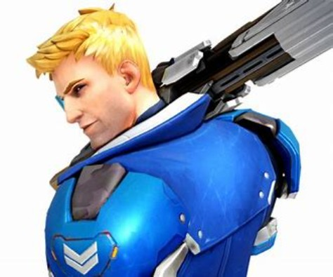
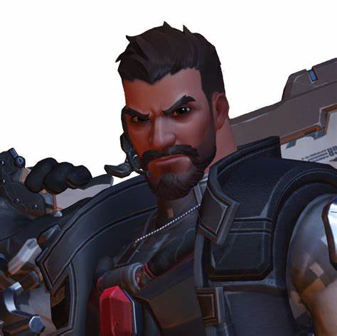
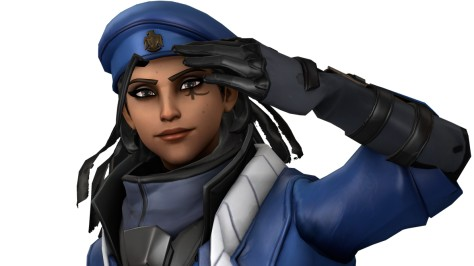
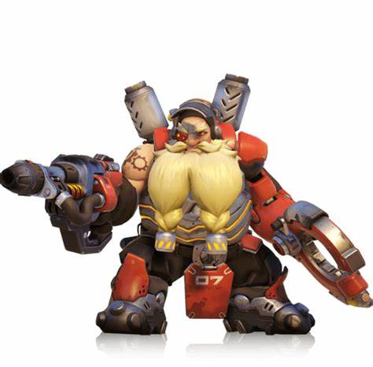
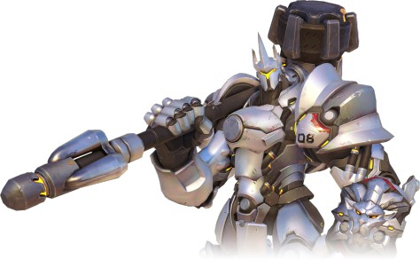
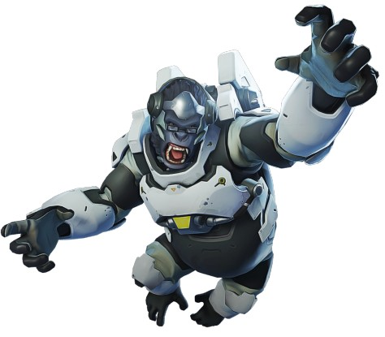
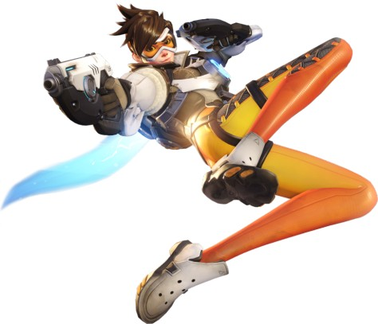
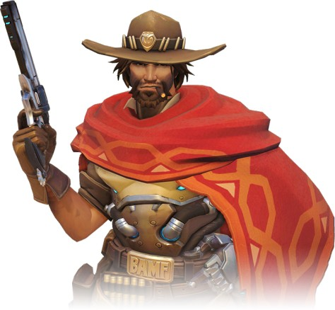
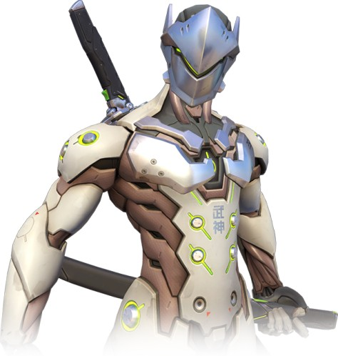
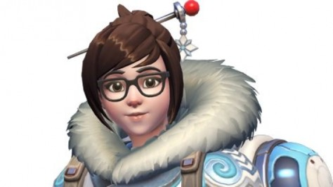

Historia
Overwatch fue fundado hace 30 años con la intención de detener a los Ómnicos y junto a ello la Crisis Ómnica. Después de la crisis, la organización se convirtió en una de las fuerzas que mantenía la paz y un motor de la innovación, haciendo avances en el campo de la ciencia hasta la exploración del espacio y la investigación medica.
Miembros
Equipo de asalto original (Fundadores)
Jack Morrison

Un miembro del Programa de Mejoramiento de Soldados de USA, Morrison fue promovido a Comandante después de la Crisis Ómnica y se convirtió en el icono publico de Overwatch.
- Se presume que Morrison falleció en el ataque a los Cuarteles de Suiza. El sobrevivió y se convirtió un vigilante bajo el nombre de Soldado: 76
Gabriel Reyes

Un miembro del Programa de Mejoramiento de Soldados de USA, un veterano y amigo de Morrison, que fue el primer comandante de Overwatch durante la Crisis Ómnica y mas tarde se unió a Blackwatch.
- Se presume que Reyes falleció en el ataque a los Cuarteles de Suiza. El sobrevivió y uso el nombre clave Reaper después de esto. Reaper ha sido visto trabajando con Talon, una agencia terrorista y enemiga de Overwatch.
Ana Amari

Una francotiradora experta de Egipto. Ella mas tarde se convirtió en la segunda a cargo detrás de Morrison. Se presume que ella falleció en una operación de rescate de rehenes.
- Realmente, ella fue disparada a través de su ojo cibernético, aunque estaba muy herida, ella sobrevivió. Ana se oculto por un largo tiempo, y salió a la luz recientemente, trabajando junto al Soldado: 76.
Torbjörn Lindholm

Un experto diseñador de armas de Suecia. Después de la Crisis Omnica, Lindholm continuó desarrollando nueva tecnología junto el diseño y producción de armas para Overwatch.
- Después de la caída de Overwatch, todas sus armas fueron robadas o escondidas lejos. El estuvo trabajando en su rastreo para evitar de que su tecnología caiga en las manos equivocadas. Torbjörn Lindholm estaba cerca de Moscow, Rusia cuando recibió la llamada de Winston.
Reinhardt Wilhelm

Un condecorado soldado Alemán de las Cruzadas. Wilhelm continuo en el frente de batalla como un soldado para Overwatch después de la Crisis Ómnica hasta los 50 años, cuando debió enfrentarse a la jubilación obligatoria.
- Después de la caída de Overwatch, el conservo su armadura de las Cruzadas viajando alrededor de Europa y continuando su pelea por la justicia con su amiga, Brigitte. Reinhardt Wilhelm estaba en Nuuk, Groenlandia cuando recibió la llamada de Winston.
Unidos después de la Crisis Ómnica
Angela Ziegler

Una medica innovativa desde Suiza contratada por su experiencia en nanobiología. Ella se unió a Overwatch antes de los 17 años y se convirtió en el cerebro de la investigación médica, al mismo tiempo, una curadora en el centro de batalla.
- Después de la caída de the Overwatch, ella mantuvo su traje Valkyrie y viajo alrededor del mundo ayudando a los que lo necesitaban. Angela Ziegler estaba en Iraq cuando recibió la llamada de Winston.
Winston

Un sobreviviente de la Colonia Lunar Horizon. El se unió a Overwatch y se convirtió en uno de los lideres cientificos, tambien fue un competente combatiente. El le salvó la vida a la agente Lena Oxton diseñando un acelerador cronal para estabilizar a su desasociación cronal. El también fue conocido por derrotar a Doomfist.
- Después de la caída de Overwatch, el eligió mantenerse en el Observatorio: Gibraltar y guardar la información de Overwatch con Athena, tambien continuo con sus investigaciones ahi. Después de un ataque a la base, Winston reactivo Overwatch y actualmente es el líder de facto de Overwatch.
Lena Oxton

Una antigua piloto sin miedo a nada. Oxton sufrió una desaceleración cronal en un accidente hasta que fue salvada por Winston. Después de eso, ella se convirtió en una de las agentes mas efectivas en el combate.
- Después de la caída de Overwatch, ella, junto a otros agentes, fueron forzados a terminar cualquier operación relacionada a Overwatch. Oxton estaba en Londres, Inglaterra cuando ella recibió la llamada de Winston.
Jesse McCree

Un antiguo miembro de la banda Deadlock que se convirtió en un nuevo agente en Blackwatch. McCree estuvo bajo las órdenes de Gabriel Reyes dentro de la organización Blackwatch, hasta que la organización bajo órdenes de Reyes empezó a planear un golpe de estado. En ese punto, él dejo Overwatch.
- Después de dejar Overwatch, McCree se mantuvo fiel a su código de justicia. El se convirtió en un cazarrecompensas y vigilante, y fue un hombre buscado en varias partes del mundo. Jesse MaCree estaba cerca de Indiana o Kentucky, US cuando recibió la llamada de Winston.
Genji Shimada

El ex heredero del Clan Shimada que su vida fue salvada por Angela Ziegler, usando prótesis de alta tecnología de Overwatch. El hermano menor de los Shimada unió fuerzas con Overwatch para derrumbar su antigua familia, y dejar la organización donde lo hecho, hecho esta.
- Despues de dejar Overwatch, el fue al Monasterio Shambali, Nepal para buscar la respuesta a su vida. Genji Shimada estaba en Japon cuando recibió la llamada de Winston.
Mei-Ling Zhou

Una prominente climatóloga que fue asignada al Ecopunto: Antárctica. Después que una tormenta solar golpeará la base, resultando en un corte en las comunicaciones y racionamiento, Zhou y los otros científicos decidieron entrar en un estado de criostasis para sobrevivir. Una década después, Mei-Ling Zhou fue la única superviviente.